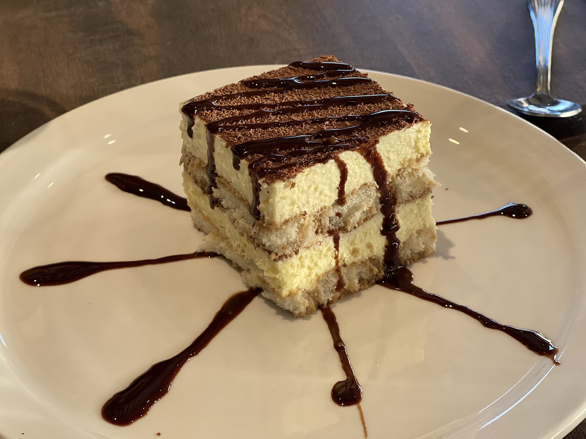
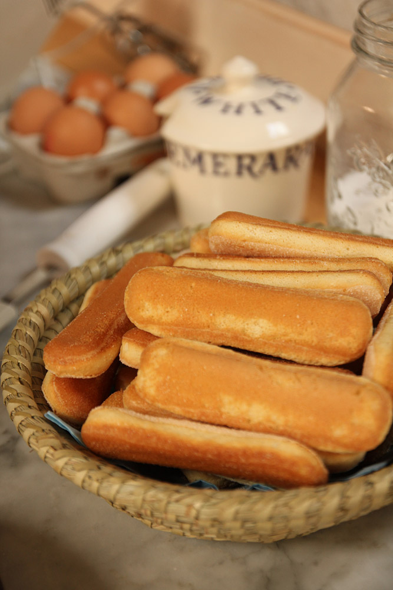
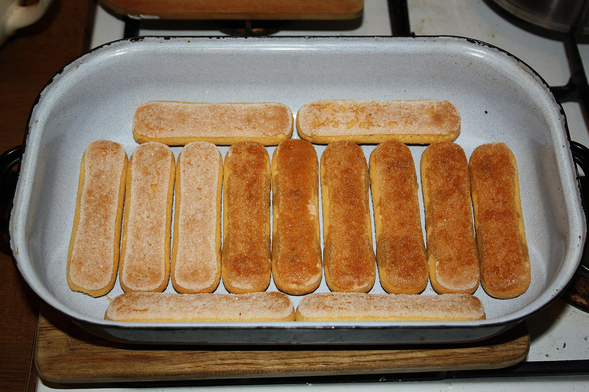
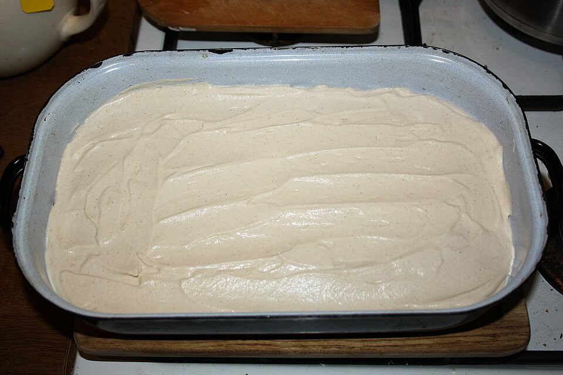
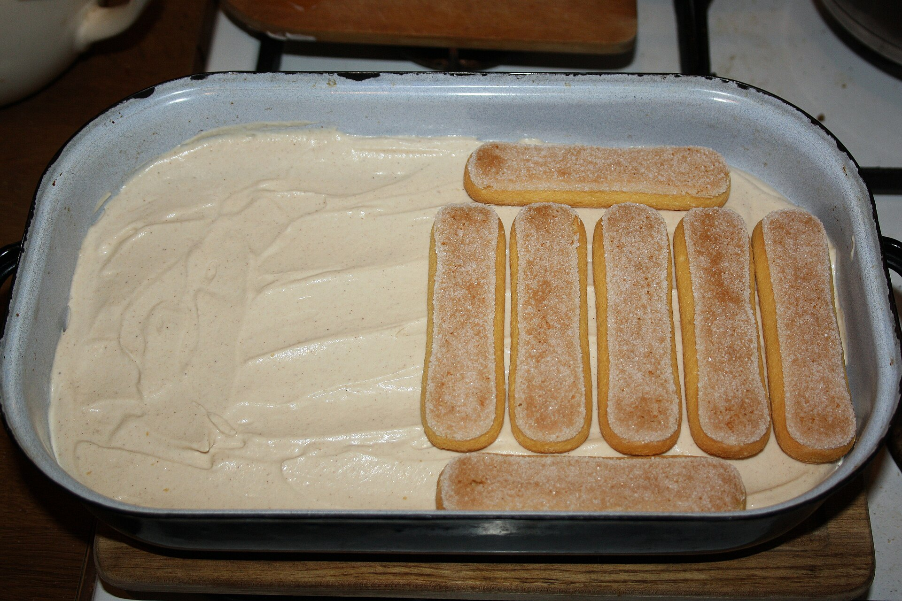
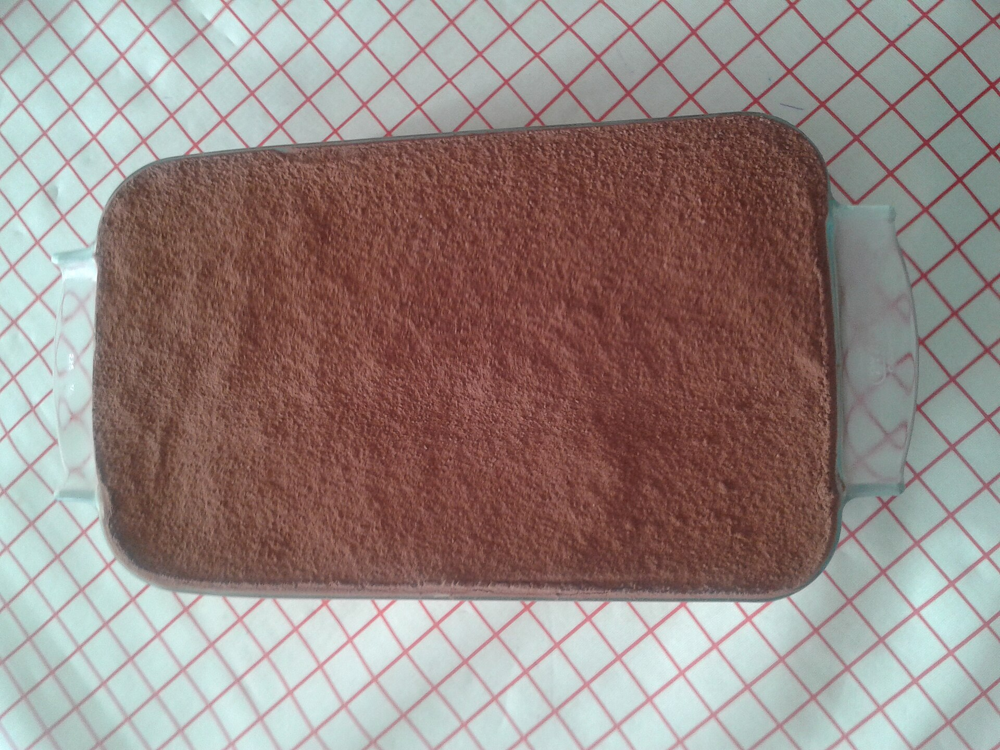

Tiramisu is a classic Italian dessert made with layers of coffee-soaked ladyfingers, creamy mascarpone filling, and cocoa powder. It is delicious, smooth, and perfect for sharing with family and friends. The best part is that it does not require baking!

Gather all your ingredients. Brew the coffee and let it cool completely before using it.

Quickly dip each ladyfinger into the cooled coffee. Do not soak them for too long, or they may become too soft.

Mix the mascarpone cheese, heavy whipping cream, and sugar until the mixture becomes smooth and creamy.

Place a layer of coffee-soaked ladyfingers in a dish. Spread the cream mixture on top. Repeat the layers until you run out of ingredients.

Dust the top with cocoa powder. Refrigerate for at least 4–6 hours, preferably overnight, before serving.

Headings: Playfair Display, via Google Fonts
Body: Montserrat, via Google Fonts